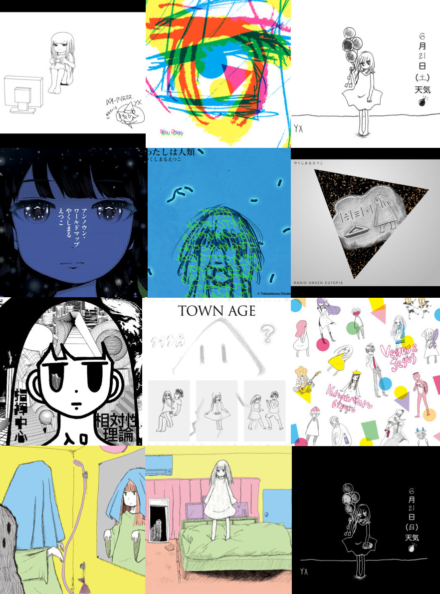

相対性理論
Sōtaisei Riron (相対性理論; lit. "Theory of Relativity") is a Japanese rock band formed in Tokyo in September 2006..
Etsuko Yakushimaru (やくしまる えつこ, Yakushimaru Etsuko) is a Japanese singer, producer, composer, lyricist, arranger and artist. She is broadly active, from pop music to experimental music and art. Her output has also included drawing, installation art, media art, poetry and other literature, and recitation. She also produces numerous projects and for artists, including her band, Sōtaisei Riron. Along with appearing in the Oricon charts with several hit songs, she has also created a project that involved the use of satellite, biological data and biotechnology, a song-generating robot powered by artificial intelligence and her own voice, an independently-developed VR system, and original electronic musical instruments. Major recent activities include exhibitions at Mori Art Museum, Toyota Municipal Museum of Art, KENPOKU ART 2016, and Yamaguchi Center for Arts and Media [YCAM]. Her Tensei Jingle and Flying Tentacles albums, both released in 2016, received praise from figures including Ryuichi Sakamoto, Jeff Mills, Fennesz, Penguin Cafe, Kiyoshi Kurosawa and Toh EnJoe. She is known for her solo works including theme songs in several anime series, such as The Tatami Galaxy, Arakawa Under The Bridge, Space Dandy, Sailor Moon Crystal, Hi Score Girl, Eureka Seven and Mawaru Penguindrum. As well as being the lead vocal of the rock band Sōtaisei Riron, she also works as a contemporary artist, illustrator and narrator. She also goes by the alias of Tica α (ティカ・α) when credited for lyrics and composing. In 2017 she won the STARTS Prize for Artistic Exploration for converting her pop song I’m Humanity into DNA.

シフォン主義 (Shifonsyugi / Chiffon Capitalism), released in 2008, is the debut studio album by the Japanese indie rock band Sōtaisei Riron.
The album shocases the band's signature blend of catchy pop melodies, indie rock, and whimsical storytelling, led by the distinctive
vocals of Etsuko Yakushimaru.
their second album, Hi-Fi Shinsho, ranked No. 7 in the Oricon weekly chart.
The third album, Synchroniciteen, was released in April 2010. The album consists of both all-new songs and songs already performed live during numerous live events.
